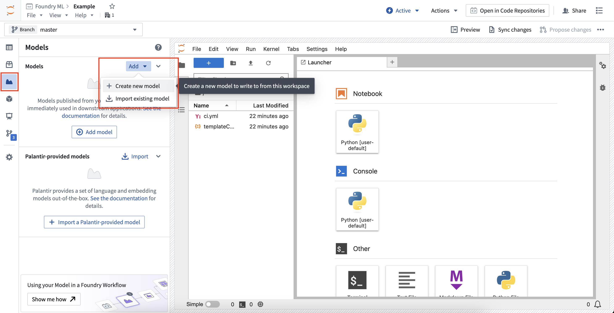
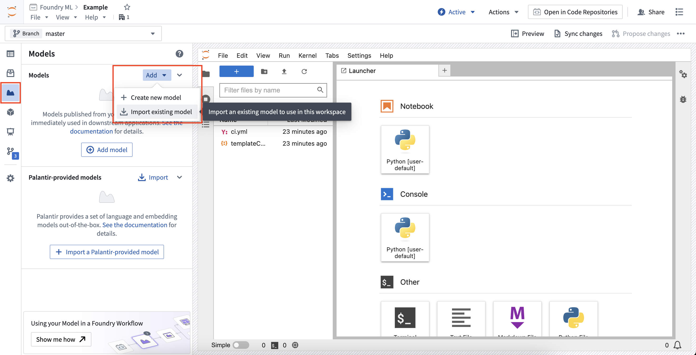
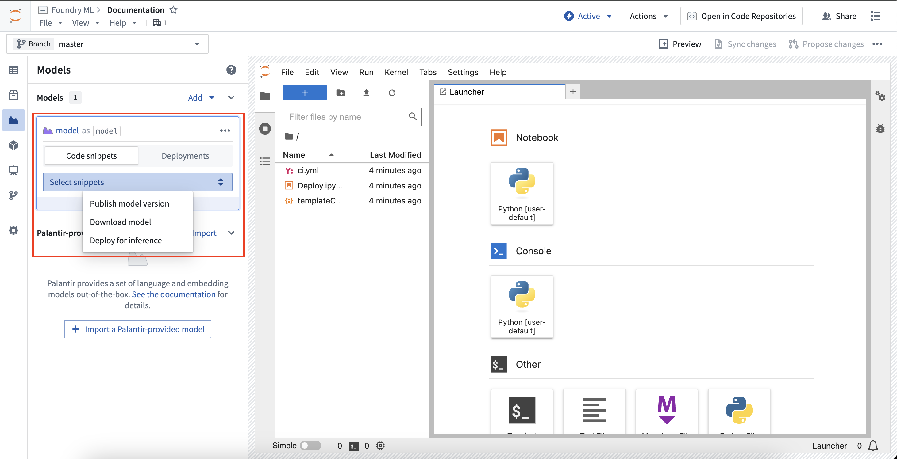
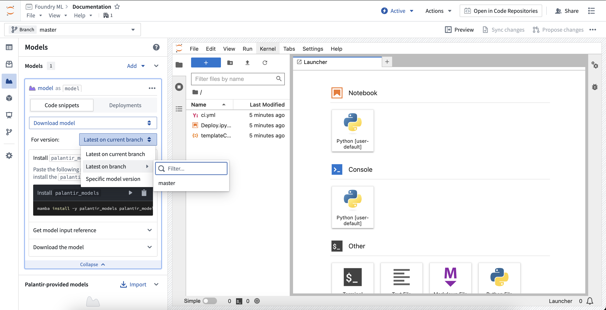
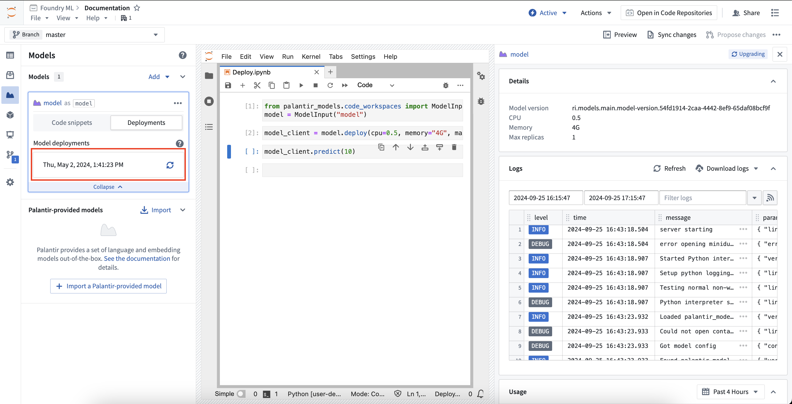
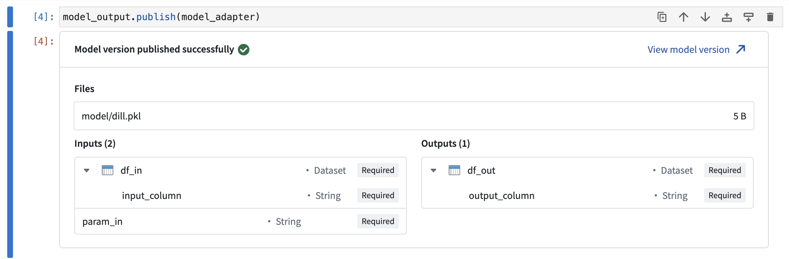
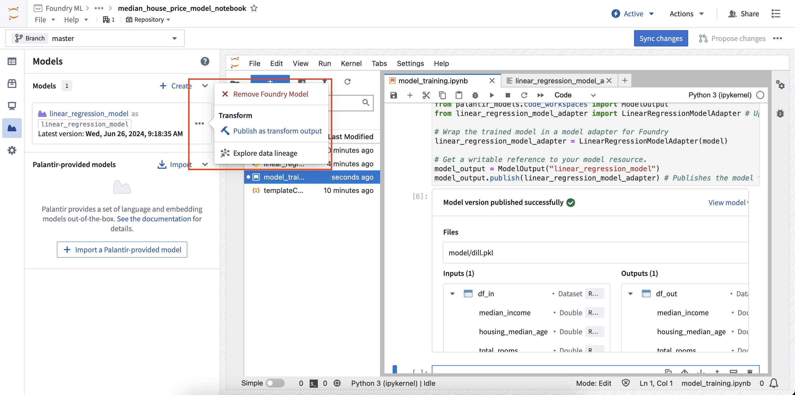
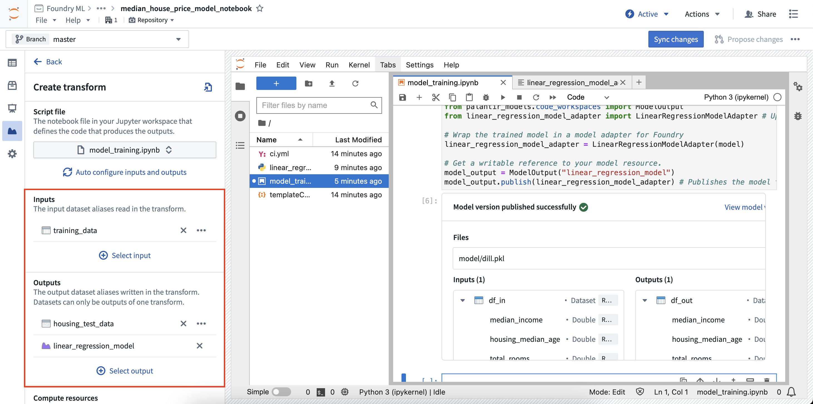
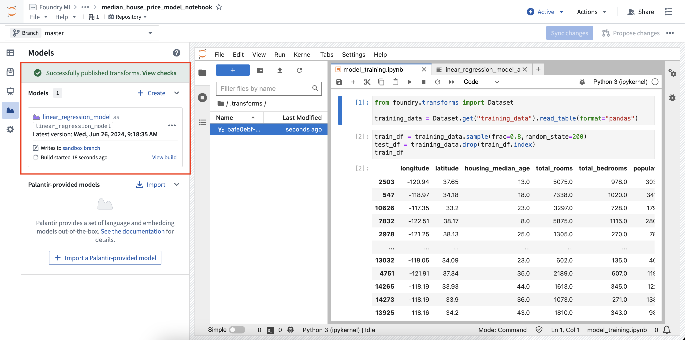

:::callout{theme="neutral"} Interacting with models is only supported in JupyterLab® code workspaces. :::
Code Workspaces allows you to train and publish models, as well as import them to interact with previously published models.
Code Workspaces requires you to create a model alias for every Foundry model asset referenced in the workspace. The model alias acts as a reference to a specific model, allowing you to interact with models to publish new versions or download the saved model files.
When registering a model in the Models tab, Code Workspaces creates a mapping between the chosen model alias and the Foundry model's unique identifier in a hidden file located under the /home/user/repo/.foundry folder of the workspace.
To learn how to publish a model from Jupyter® notebooks, review the model integration documentation.
Models can be created or imported into the workspace all from the Models sidebar panel.
To create a new model, open the Models sidebar panel and select Add > Create new model. This will walk you through creating a new model, registering the alias, and will provide snippets for publishing to the model. This will also generate a skeleton model adapter Python file which must be implemented to publish the model back to Foundry.

To import an existing model, open the Models sidebar panel and select Add > Import existing model. This will walk you through importing the model and registering the alias, and will provide snippets for downloading the saved model state files.

Imported models load the serialized model state from a given model version. Code Workspaces gives different controls over which model version is used when importing a model, allowing you to select the latest on the current workspace branch, the latest on a provided branch, or a specified model version.
The Models sidebar panel provides snippets to copy and paste into a notebook for common workflows. All snippets will instruct you to install palantir_models, which is the Palantir-provided library for developing and interacting with models.
Each model card in the sidebar will create unique snippets specific to that model. Selecting the model card will expand the card and reveal a selector to choose to show snippet for a specific task.

To publish a model version, you must first develop a model adapter. For models created inside Code Workspaces, a skeleton adapter will be created for you to implement in a Python file named after the alias given to the model. The model card will provide in-depth instructions on developing your model adapter and publishing your model back to Foundry.
The snippet below is for a model with the alias linear_regression_model. Assuming a model adapter has been written in linear_regression_model_adapter.py, the model publishing code should look like the following:
from palantir_models.code_workspaces import ModelOutput
# Model adapter api has been defined in linear_regression_model_adapter.py
from linear_regression_model_adapter import LinearRegressionModelAdapter
# sklearn_model is a model trained in another cell
linear_regression_model_adapter = LinearRegressionModelAdapter(sklearn_model)
model_output = ModelOutput("linear_regression_model")
model_output.publish(linear_regression_model_adapter)
To download a previously published model version, change the snippet selector to Download model. This will provide controls on resolving a model version, which will control which model version gets used for downloading the model files.

The snippets will automatically update to support the selected model version resolution control. Review the ModelInput class documentation below to learn more.
Models can be deployed in Code Workspaces for inference. These deployments are shared per model version, meaning a given model version can have at most one associated deployment, and these deployments are fully separate from existing modeling objective live deployments and model deployments. Deployments are fully configurable from code and have a default scaling policy that will shut down the deployment after 20 minutes of no use.
To load the deployment for a given model version, use the Select snippets dropdown menu and change the option to Deploy for inference. This will load the snippets for deploying the model and will display the same selector as the Download files option for choosing a model version. The snippets will walk through deploying the model and running inference against it.
To monitor a deployment from within Code Workspaces, expand the model card for the model you are working with and select Deployments. In the deployments tab, a list of deployed model versions will be available. Selecting a model version will expand a new panel on the right that contains information about the deployment, such as resources used, logs, and more.

See the ModelInput class documentation below to learn more.
Model adapters are used to instruct Foundry on how to save, load, and execute a model across the platform. When publishing a model, you must wrap the model with a model adapter.
In Code Workspaces, model adapters must be defined in a separate .py file. When a new model is added to the workspace, a file is generated based on the alias name given. For example, if the alias is my_model, a file named my_model_adapter.py is generated, with a skeleton model adapter class named MyModelAdapter.
The code snippets provided in the Models panel are generated under the assumption that the alias, file name, and class name match. If the file is moved or the adapter class is renamed, you may have to make manual edits to the generated snippets.
Learn more about developing model adapters.
The ModelOutput class imported from palantir_models.code_workspaces provides a writeable reference to your Foundry model. To publish your model, you must wrap the model in a model adapter and pass to the reference with the publish method.
Calling the publish method will save the model as a new model version. If the model_output.publish method call is the last line in any Jupyter® notebook cell, a preview window will be displayed confirming that the model has been published successfully.

The ModelInput class imported from palantir_models.code_workspaces provides a lightweight readable reference to your Foundry model which allows reading the serialized state of a published models and deploying the model locally for inference. The code below shows an example of getting a readable reference to a model with the alias my_model, getting the latest model version on the test branch:
from palantir_models.code_workspaces import ModelInput
my_model_input = ModelInput("my_alias", branch="test")
ModelInput allows downloading the serialized model weights that are stored when the model is published.
from palantir_models.code_workspaces import ModelInput
# get the latest model version
my_model_input = ModelInput("my_alias")
# download the files
my_model_input.download_files()
This returns a path to a temporary directory where the files are downloaded.
For workflows involving model fine-tuning/republishing, it is often useful to be able to download the model files and load them into an adapter. If the workspace has a local copy of the adapter used to publish the model or the adapter comes from a shared adapter package and you have added it as a dependency in the workspace, you can load the adapter and use the adapter as you would anywhere else.
# in this example, the adapter is in a local python file `my_adapter_file.py`
from my_adapter_file import MyAdapter
from palantir_models.code_workspaces import ModelInput
my_model_input = ModelInput("my_alias", model_version="ri.models.main.model-version...")
# initialize the adapter
initialized_adapter = my_model_input.initialize_adapter(MyAdapter)
# the initialized adapter can now be republished using `ModelOutput`, or you can access the python objects stored inside my adapter
# for example, if there is a variable `pipeline` that holds a huggingface pipeline. Note that this code varies depending on your
# adapter definition.
pipeline = initialized_adapter.pipeline
Models can also be deployed for inference within the code workspace. These deployments are shared per model version, so multiple concurrent sessions using the same model version will send requests to the same deployment.
To interact with a model deployment, you must get a deployment client for the model.
from palantir_models.code_workspaces import ModelInput
my_model_input = ModelInput("my_alias")
deployment_client = my_model_input.deploy(cpu=2, memory="8G", max_replicas=1)
The deployment client has a number of methods available for controlling the deployment.
# wait until the model is ready
client.wait_for_readiness()
# scale the deployment
client.scale(cpu=4)
# run inference
client.predict(...)
# manually shutdown (deployments will auto-shutdown after 20 minutes of no use)
client.disable()
There is a 40 MB limit on the size of a single inference request, as this approach is intended for quick iteration involving other models rather than production-scale inference. In practice, this often corresponds to an average dataset of around 100,000 rows, depending on row size.
If you need to run your model over larger datasets, you can enable chunking, which breaks down a large dataset into manageable pieces and sends them to the model one chunk at a time. You can enable chunking by setting the client.use_chunking method to True as follows:
client.use_chunking = True
client.predict(...)
Note that chunking currently supports only one dataset as input, but you can include any number of other parameters. If your dataset exceeds these limits or the chunking approach is insufficient for your workflow, consider using Code Repositories and transforms to handle larger-scale data processing.
Jupyter® notebooks that produce model outputs can also be used in transforms created from Code Workspaces. Follow the steps below to register a transform for a model output:



You can then select View build to see the running transforms job. If you make a change to your notebook code and want to rebuild the model, select Rebuild in the model card to re-run the build. Models and datasets created with a transform can be scheduled just like transforms created elsewhere in the platform. Learn more about scheduling transforms.
Jupyter®, JupyterLab®, and the Jupyter® logos are trademarks or registered trademarks of NumFOCUS.
All third-party trademarks (including logos and icons) referenced remain the property of their respective owners. No affiliation or endorsement is implied.